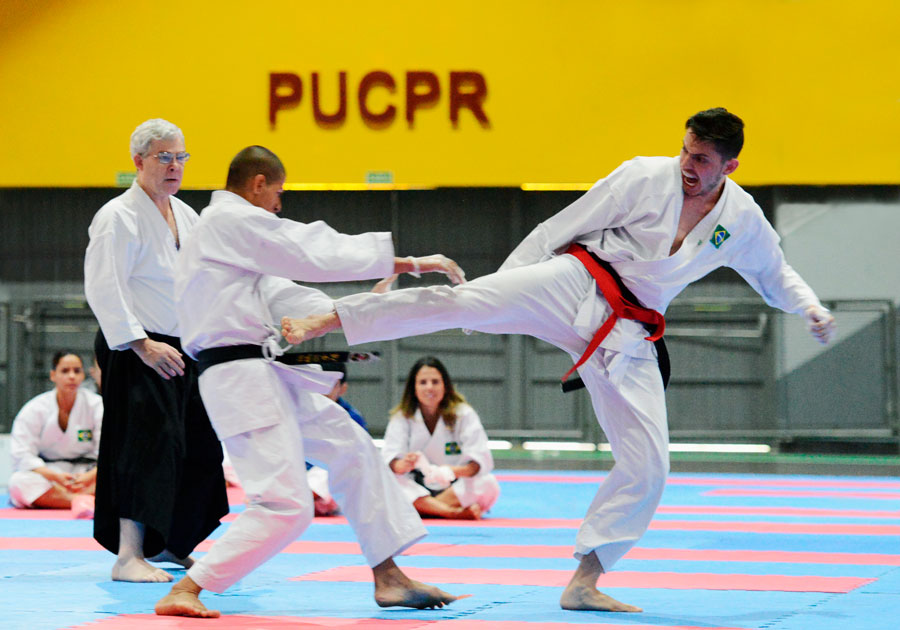
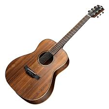
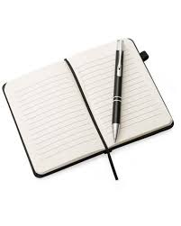

Sempre gostei de aprender novas coisas e conhecer um pouco de tudo. Gosto de fazer diversas coisas no meu tempo livre, atualmente estou lendo muitos lirvos, mas minha paixão é por esportes, especialmente esportes de luta.
Amo lutar, me sinto vivo lutando, é mágico, atualmente não posso fazer as coisas que eu mais gosto por causa da cirurgia e isso me deixa triste, mas tudo bem, eu vou voltar.
Vou fazer uma lista sobre os meus hobbies




| hobbie | Tempo | Nivel | graduação |
|---|---|---|---|
| karate | 5 anos | Avançado | faixa Roxa |
| judô | 3 anos | iniciante | faixa amarela |
| violão | 2 anos | intermediaro | nenhuma |
| surf | 1 ano | iniciante | nenhuma |
| livros | 5 meses | principiante | 8 livros |